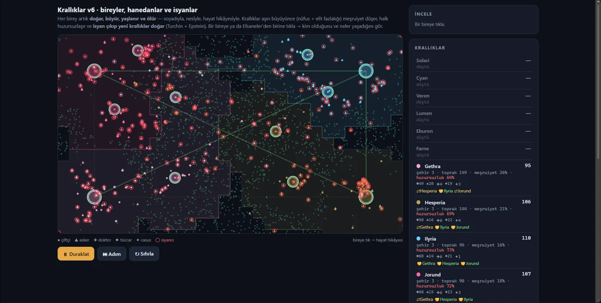
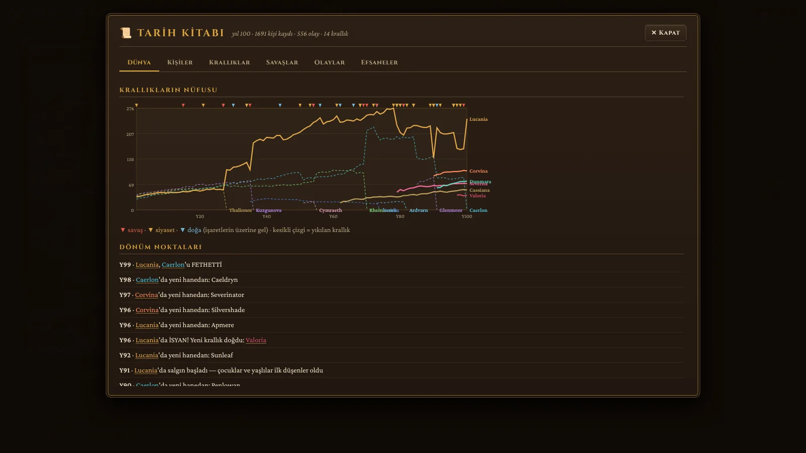
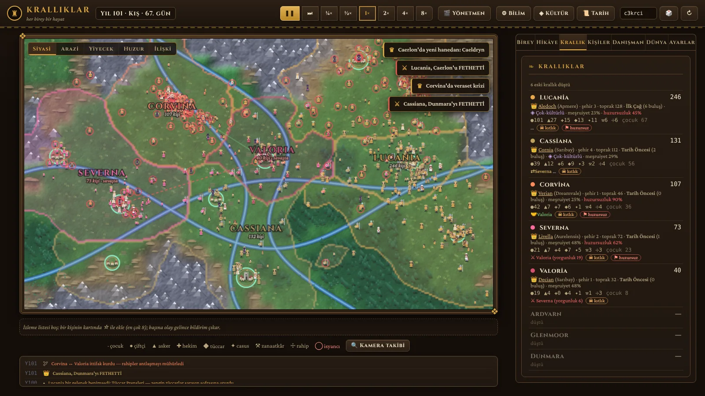

People with inner lives
Each person has a Big Five personality, values, a family, friends and rivals, memories and a goal such as revenge or finding a mate. They age, marry, raise children and die.
Case study
I wanted to see what happens when every person in a society gets a personality, a family and a memory, and nobody writes the story. Kingdoms, rebellions and dynasties appear on their own, and every run tells a different history.

The question
Most simulations script their drama. I wanted the drama to come out of the rules. So every person only knows their own needs, relationships and values, and everything bigger (a kingdom, a war, a dynasty) has to be built from what those people do.
The result is a world I did not plan. Kingdoms found cities, ally and betray each other, and sometimes split in a rebellion. Because the generator is seeded, I can replay any history exactly and study why it happened.
How it works
Each person has a Big Five personality, values, a family, friends and rivals, memories and a goal such as revenge or finding a mate. They age, marry, raise children and die.
A ruler's personality decides how a kingdom handles war, peace and betrayal, so the same map can play out very differently from one run to the next.
Terrain, seasons, fields and droughts shape food and migration. Rebellions follow the civil violence model by Epstein (2002), with the threshold tuned by measurement.
A seeded random generator makes every run reproducible: the same seed replays the same history. The simulation and the interface use separate random streams, so clicking around never changes what happens.
Design decision
Before writing the social layer I read the research on generative agents and on how games like Dwarf Fortress and Crusader Kings model people. Calling a language model for hundreds of people at every step is not practical, so each mind is rule-based: memory, relationships, personality and goals.
The plan is to use a language model only for rare moments, such as writing the biography of a legendary figure. The notes and sources are in the repository.
The hard parts
Population is capped at 1,100 (110 per kingdom) and people only look at their neighbors through a spatial grid. The simulation runs on the main thread: at around 600 people, 8× speed reaches roughly 2 to 3× in practice. When a computer cannot keep up, the interface shows the real speed instead of pretending.
Kingdoms should rise and fall without everything collapsing in the first fifty years. I tuned the rules by measuring runs, for example a rebellion threshold of 0.13 instead of the paper's 0.1, and checked demography against historical ranges: in pre-industrial societies about half of all children died before adulthood, and life expectancy at birth in my runs sits in the mid-30s.
Relationships are one-directional, as in Crusader Kings: what A thinks of B is not what B thinks of A. Memories fade unless they matter. Grief, pride and hunger change mood and fear. Events are written from the real state of the world, so the history reads like a story and not like a log.
See it



Tip: press Space to pause, + and − to change speed, F to follow a person. Click anyone on the map to read their life.
Honest status
I keep a plain list of known gaps in the repository. The effect of the advisor's decisions is still hard to see in the noise of the world, war reasons come from only a few templates, and I have not run a test with real players yet.
Writing those limits down, and measuring against them, is part of how I work on this project.